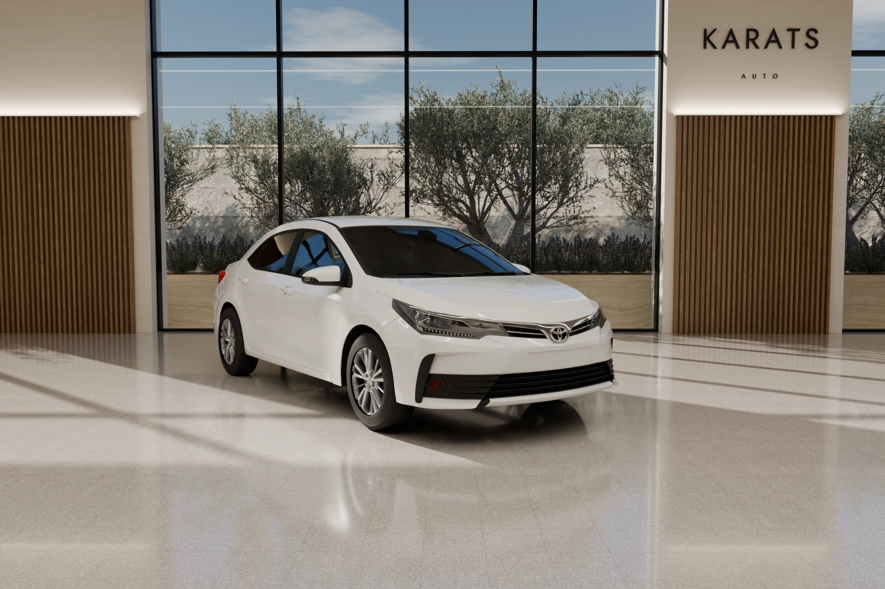

Cada semana revisamos decenas de coches en subastas profesionales de Europa. Solo uno de cada diez llega al showroom. Si algo no cuadra, no regateamos. Simplemente nos vamos.
1 de 10
coches llega al showroom.
4
idiomas para hablar contigo: ES · EN · RU · UA.
Lo que no pasa el filtro.
- Kilómetros que no cuadran con la ITV
- Golpe estructural en el informe
- Pintura oculta
- Embargo o cargas en la DGT
- Huecos en el historial de mantenimiento
- Fallos de cambio en el informe
- Rastros de agua en el habitáculo
- Demasiados propietarios
- Más caro de lo que vale
- Todo cuadra. Al showroom.
Como un joyero mira una piedra.
Un diamante se valora por cuatro rasgos. Un coche, también. De ahí nuestro nombre.
Historial. Propietarios, mantenimiento, registros de ITV. Un hueco en la historia ya es motivo para decir que no.
Kilómetros. La cifra del cuadro tiene que coincidir con cada registro de mantenimiento e ITV.
Carrocería. Cada arañazo, golpe y repintado está marcado en el mapa de daños del informe. Lo verás antes de venir.
Mecánica. Motor, cambio, electrónica. Si el informe deja una duda, la respuesta es no.